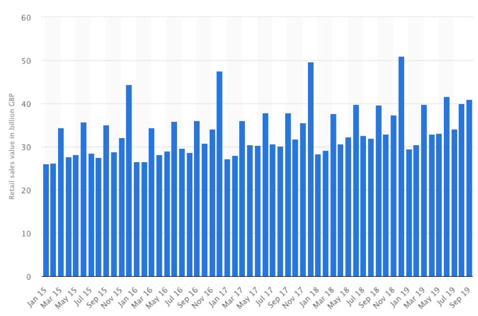
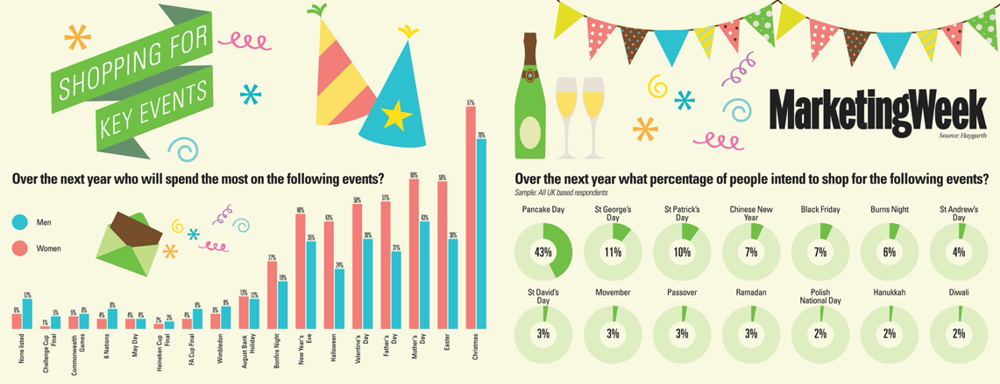

Are the bricks and mortar retail seasons changing?
January 2020
It was put to me that there may be a shift in retail customer behaviour. A shift away from high spend during traditional retail seasons. This would make current marketing strategies outdated. So I had a look into this...
This is a 10-minute read. Get comfy.Considerations:
This is a UK study of offline retail only. E-commerce still only accounts for 20% of retail sales (although growing rapidly). Physical stores still account for 80% of UK sales.
Retail consumer behaviour - spending patterns:
The numbers don’t lie, so we start by looking at consumer spending.
"Retail sales continue to peak during the last month of the year, holiday shopping being the likeliest culprit.”According to UK retail spending figures from [Statista], spending patterns haven’t displayed any significant change over the last 3 years. Retail sales continue to peak during the last month of the year, holiday shopping being the likeliest culprit. In December 2018, the sales value of retailing in the UK amounted to 51 billion British pounds, the highest in the last three-year period. Showing UK retail spending value at Christmas is increasing overall.
[Above] Total monthly sales value of all retailing in Great Britain from January 2015 to September 2019 (in billion GBP)
The chart above shows how similar the pending is across the last three years. From this, we can see that December, March, June and September are the months with the spending peaks.
A Marketing Week survey on shopping habits looks at intention to shop using a gender split across the key events, with the infographic below, showing the key events as the usual suspects.
Looking at the American market the National Retail Federation consumer surveys show spending on holidays and seasonal events throughout the year.
Similar to the UK the December holiday and September back to school are the highest spend events. These are mirrored across the last two years with a rise in spending, so far this year.
So according to the spending patterns, there is no evidence of any major shift in consumer spending trends and the traditional retail seasons remain the same. However, there are other sources suggesting that some external influencers may begin the change the seasons.
Stretching the seasons:
According to [Retail Next] shoppers are beginning to “stretch” shopping seasons by starting earlier and earlier – and in some cases, stopping later and later – and no two seasons are more indicative of this new phenomenon than the Back-to-School and winter holiday seasons. According to Retail Next, the mobile-equipped, Internet-connected shopper is no longer dependent on waiting for retailers to dictate the timing of product availability and the best deals. They shop anywhere, anytime, all the time. Consumer surveys suggest August accounts for less than 50 percent of total BtS shopping, for example, and expenditures vary considerably across different retail verticals – consumer electronics, for one, sees over 11 percent of its BtS sales in June. Shoppers are starting holiday shopping earlier – according to a consumer survey by Statista, 12.2 percent of shoppers started their holiday shopping before September. Furthermore, RetailNext data suggests some movement of December traffic and sales into January, further leading to the thought that shoppers are beating retailers at their own game by waiting for post-season markdowns, clearances and close-outs. A report by [Inside Retail] found that customers are now behaving very differently and believe they are empowered to shop wherever and whenever they want, ignoring the traditional concept of seasons..
Two types of seasonality in retail:
The seasons are still a major driving force in retail, especially for calendar holidays. And while they won’t disappear from sales cycle calendars, the idea of a retail season is shifting for several reasons. Not all seasonality is the same, and an article by [Omnia] discusses how important it is to illuminate the different drivers of consumer spending, by seeing seasonality as two separate categories; ‘holiday-driven seasonal shopping’ and ‘climate-driven seasonal shopping’.
According to [Omnia] unseasonable weather can also seriously affect retail sales. This past summer, Europe was hit by the 2018 European heatwave. The whole continent experienced an uncharacteristically hot summer that began earlier and lasted longer than we could have expected. A recent study found that unseasonably warm weather can cost retailers £40m per week for each degree that the temperature rises, and this was easy to see during the summer. Demand for summer clothes skyrocketed for much longer than retailers expected or were used to. In October, Superdry announced a 49% drop in their shares — part of which they blamed on the hot summer and their inability to sell jackets and coats. Uncooperative weather only underpins the reason retailers need to stay agile in their pricing and marketing. If the temperature soars unexpectedly, the demand for warm-weather clothing, for example, will also rise. The reverse is also true, and if the temperature plummets, consumers will search for more cold-weather clothes and indoor activities like board or video games.
Changing consumer sentiment:
A report from [PWC] has shown how consumers are changing what they spend their money on. Most notably clothing seems to be the top category that 18-44 years olds are looking to spend less on, along with eating out. The 45 plus age groups are all aiming to spend less on big ticket items. This isn’t too surprising as those focus categories are where those age groups spend the most money currently. It does however show a conscious shift in consumer spend intentions.
Generations shop differently:
While consumers continue to spend during the holidays, not all generations restrict their holiday shopping to traditional holiday seasons, according to a recent study we conducted at Yes Lifecycle Marketing [Marketing Land]. For example, while 33 percent of Centennials (consumers 21 years or younger) start their holiday shopping after Black Friday, 25 percent of millennials shop year-round for holiday gifts. Like Millennials, Gen X and baby boomers also shop differently than in the past — these generations perform most of their holiday shopping from September to November.
Macro-economics uncertainty can reduce spend:
According to [Mintel], the recent performance of seasonal retail sales in the UK, illustrates how susceptible these events are to macroeconomic changes. Following strong growth in consumer spending throughout 2018, with Valentine’s Day, Halloween and Bonfire Night all witnessing a significant uplift in consumer expenditure last year, the outlook appears to be more challenging. Consumers cut back Valentine’s Day spending in 2019, likely due in part to the ongoing political uncertainty in the UK, and there is a possibility that this trend could well continue throughout 2019, which will make the seasonal retail market highly competitive going forward.
Today’s shoppers won’t even bat an eye when it comes to ordering something “out of season” online. Instead, consumers expect to be able to find whatever they want, whenever they want. One of the drivers behind this change is the fact that travel has become significantly less expensive in the last 25 years. There’s been a 300% increase in the number of overseas trips taken since the mid 1990s, and you can now book last minute flights to warmer destinations for just a few hundred Euros. This means consumers can now visit sunny or snowy places at any time of the year and will order products out of season as they prepare for their vacations. Retailers should be stocked and prepared with any product a consumer might need, no matter the season. [Deloitte]
Seasons are influenced by sales:
As confirmed earlier in this report, the traditional seasons still provide noticeable peaks in shopper traffic and sales volume, however according to Kantar, those seasons no longer deliver profitable performance. Seasonal shopping is now almost entirely deal-driven, and at the same time, retailers face numerous competitive challenges. Consumers are changing more than just their transactional approaches to shopping. They’re changing everything about the way they shop and consume, and they’re forcing retail to rethink its most time-honoured foundational pillar: the seasonal calendar.
A [BBC news] report explained how British shoppers are doing things differently now. We are waiting for the sales and buying things out of season, holding on to them until they are needed. And this has led to a fall in sales. The overall value of retail sales dropped by 2% in 2016 compared to 2015, according to consumer insight company [Kantar Worldpanel]. With shoppers being more flexible on when they buy items, shops have leftover stock, which then has to be discounted to shift it. Retail analyst Richard Hyman agrees that shoppers are shifting focus away from seasons when buying. "There are twin evils at play here. The discounting going on and retailers not knowing their customers well enough to know what they want. "In 90% of the trading weeks in 2016, more than half the retailers in the fashion market had some sort of sale going on." This, Mr Hyman says, results in customers learning that if they hang on, the item they have their eye on might well end up being reduced in price. Dr Dimitrios Tsivrikos, a consumer and business psychologist at UCL, says the constant discounting can lead to a "dilution of trust" meaning shoppers come to believe goods are overpriced to begin with.
"In 90% of the trading weeks in 2016, more than half the retailers in the fashion market had some sort of sale going on."Conclusion:
The traditional seasons are still relevant and will continue to dictate spending patterns for the foreseeable future. However, retailers need to understand that these seasons are stretching to begin earlier and finish later and can be heavily influenced by the extreme weather systems we are experiencing. Macro-economics and political influences such as Brexit can have adverse effects on consumer confidence, which can affect seasonal performance, whilst shifting consumer spend across categories may affect which retailers perform better during peak season. It seems the biggest agent of change, however, is the rise of sales and promotions, which creates alternative seasons i.e. Black Friday phenomenon and is beginning to change the consumer mindset, to wait for sales not seasons.
Recommendations for retailers:
Channel
Digital and social channels don’t always have to lead to online sales and with the right messaging, can drive physical footfall. Digital by nature, is quick to set up and launch ads and this quick response can aid timely messaging. Media allocations should reflect target demographics, bearing in mind the varying timeframes for shopping from these groups.
Localisation
Messaging and time related offers or activations should take local weather, culture, religious holidays and demographics into account, in order to pick up on any abnormal seasonal spend and to ensure the right thing is being said to the right person at the right time.
Data-driven targeting to dictate the ‘spending moments’
In addition, with hyper-personalisation being so ubiquitous now, almost personalised marketing messaging seems the natural next step. Marketers can also create sending moments with personalised messages and localised moments.
Avoid sales-led messaging
Sales are so widely used now that they’re considered always on and sales messaging no longer achieves cut-through. Marketers shouldn’t rely on a sale or offer to motivate customer action.
Avoid singular messaging
It’s important to remember that subscribers don’t just shop for other people during the holiday season — they shop for themselves, too. In fact, many of the purchases Centennials, millennials and Gen Xers make on Black Friday and Cyber Monday are for their own use. Marketers who can play up the “Treat Yo Self”-type messaging will help that buyer make himself or herself a bit happier this year. The holidays are a time where everyone wants to feel a bit more special; marketers who execute with this in mind will build brand equity and hit their goals.